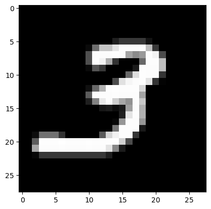
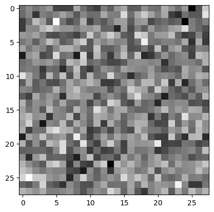
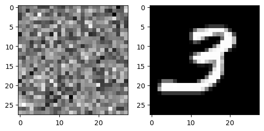
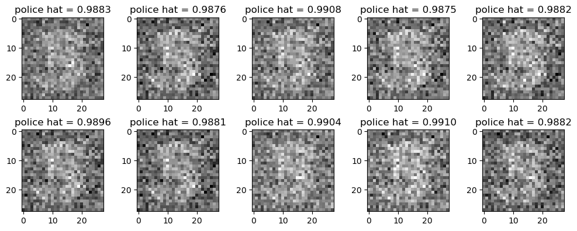
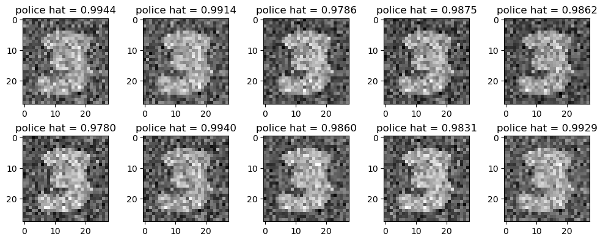

import torch
import torchvision
import fastai.vision.all
import fastai.vision.gan
import matplotlib.pyplot as plt Generative Adversarial Network
1. Imports
2. GAN?
A-1. 생성모형이란? 쉬운 설명
- 사진 속에 있는 고양이와 개를 분류하는 것보다 고양이 이미지와 개 이미지를 만드는 것이 더 어렵지 않은가?
A-2. 수학적인 설명
- 이미지 \(X\)가 주어졌을 때 레이블을 \(y\)라고 한다면. 이미지를 보고 레이블을 맞추는 것은 \(P(y|X)\)이다
- 그렇지만 이미지를 생성하는 것은 \(P(X,y)\)이다
- 쉽게 말하면 고양이인지 개인지 맞추는 것은 \(y\)만 맞추면 됨. 하지만 이미지를 생성하는 것은 \(X,y\)를 모두 맞추어야 함
- \(P(X,y)\)를 알면 \(P(y|X)\)은 알 수 있음 하지만 역은 불가능
- 한 마디로 이미지를 생성하는 것이 이미지를 분류하는 것보다 더 어렵다
B. GAN은 생성모형 중 하나다
- GAN의 원리는 예를 들어 설명하면 경찰과 위조지폐범이 경쟁을 통해서 서로 발전하는 모형으로 설명 가능하다.
- 위조범은 경찰이 속게끔 위조지폐를 더 정교하게 만들고 경찰은 그 위조지폐를 잘 구별하게끔 학습을 한다.
- 굉장히 우수한 경찰이라도 진짜와 가짜를 구분하지 못 할때(=진짜 이미지를 0.5의 확률로만 진짜라고 할 때= 가짜이미지를 0.5의 확률로 가짜라고 할 때) 학습을 멈춘다.
3. GAN의 구현
A.DATA
path = fastai.data.external.untar_data(fastai.data.external.URLs.MNIST)
pathPath('/root/.fastai/data/mnist_png')X_real = torch.stack([torchvision.io.read_image(str(l)) for l in (path/'training/3').ls()],axis=0)/255
X_real.shapetorch.Size([6131, 1, 28, 28])plt.imshow(X_real[0].reshape(28,28),cmap='grey')
B. Faker 생성
- 네트워크 입력 : (n,??)
- 네트워크 출력 : (n,1,28,28)
torch.randn(1,4)tensor([[ 0.0454, -0.7508, -0.9412, -1.6791]])reshape을 위한 class를 정의하자
class reshape2828(torch.nn.Module):
def __init__(self):
super().__init__()
def forward(self,X):
return X.reshape(-1,1,28,28)net_faker = torch.nn.Sequential(
torch.nn.Linear(4,64),
torch.nn.ReLU(),
torch.nn.Linear(64,64),
torch.nn.ReLU(),
torch.nn.Linear(64,784),
torch.nn.Sigmoid(),
reshape2828()
)net_faker(torch.randn(1,4)).shapetorch.Size([1, 1, 28, 28])C. 경찰 생성
- 네트워크의 입력 : (n,1,28,28)
- 네트워크의 출력 : 0 or 1
net_police = torch.nn.Sequential(
torch.nn.Flatten(),
torch.nn.Linear(784,64),
torch.nn.ReLU(),
torch.nn.Linear(64,30),
torch.nn.ReLU(),
torch.nn.Linear(30,1),
torch.nn.Sigmoid()
)D. 패트와 매트
plt.imshow(X_real[0].reshape(28,28),cmap='grey')
진짜 이미지 -> 0 / 가짜 이미지 -> 1
net_police(X_real[[0]])tensor([[0.5080]], grad_fn=<SigmoidBackward0>)noise = torch.randn(1,4)
plt.imshow(net_faker(noise).data.reshape(28,28),cmap='grey')
yhat_fake = net_police(net_faker(noise))
yhat_faketensor([[0.5001]], grad_fn=<SigmoidBackward0>)1과는 매우 거리가 멈
아무 학습도 안 했기때문에 당연… 하지만 무능!!
fig , ax = plt.subplots(1,2)
ax[0].imshow(net_faker(noise).data.reshape(28,28),cmap='grey')
ax[1].imshow(X_real[0].reshape(28,28),cmap='grey')
이걸 구분을 잘 못하고 있음…
E. 경찰이 공부했다.
진짜 이미지 -> 0 , 가짜 이미지 -> 1
- step1
noise = torch.randn(6131,4)
X_fake = net_faker(noise)
y_real = torch.tensor([0]*6131).reshape(-1,1).float()
y_fake = torch.tensor([1]*6131).reshape(-1,1).float()yhat_real = net_police(X_real) # 경찰이 진짜 이미지를 보고 판별한 결과
yhat_fake = net_police(X_fake) # 경찰이 가짜 이미지를 보고 판별한 결과- step2
bce = torch.nn.BCELoss()
loss_police = bce(yhat_fake , y_fake) + bce(yhat_real , y_real)
loss_policetensor(1.4071, grad_fn=<AddBackward0>)- step3,4는 앞에서 공부한 내용과 비슷하기에 생략하고 바로 epoch을 돌리자
net_police = torch.nn.Sequential(
torch.nn.Flatten(),
torch.nn.Linear(784,64),
torch.nn.ReLU(),
torch.nn.Linear(64,30),
torch.nn.ReLU(),
torch.nn.Linear(30,1),
torch.nn.Sigmoid()
)
bce = torch.nn.BCELoss()
optimizr_police = torch.optim.Adam(net_police.parameters())
for epoc in range(30):
noise = torch.randn(6131,4) # epoc을 돌릴 때마다 새로운 noise를 뽑아야함
X_fake = net_faker(noise)
yhat_real = net_police(X_real)
yhat_fake = net_police(X_fake)
loss_police = bce(yhat_real,y_real) + bce(yhat_fake,y_fake)
loss_police.backward()
optimizr_police.step()
optimizr_police.zero_grad()net_police(X_real).mean()tensor(0.0224, grad_fn=<MeanBackward0>)꽤 늘었다
F. 발전하는 페이커
- step1
Noise = torch.randn(6131,4)
X_fake = net_faker(Noise) - step2
yhat_faker = net_police(X_fake)
loss_faker = bce(yhat_faker,y_real)가짜를 보고 진짜라고 생각해야한다
- step3~4는 별로 특별한게 없음. 그래서 바로 epoch을 진행시켜보자.
net_faker = torch.nn.Sequential(
torch.nn.Linear(in_features=4, out_features=30),
torch.nn.ReLU(),
torch.nn.Linear(in_features=30, out_features=64),
torch.nn.ReLU(),
torch.nn.Linear(in_features=64, out_features=784),
torch.nn.Sigmoid(),
reshape2828()
)
#bce = torch.nn.BCELoss()
optimizr_faker = torch.optim.Adam(net_faker.parameters()) # 얘를 실행시키면 새로운 옵티마이저가 나와서 초기값으로 돌아감for epoc in range(10):
noise = torch.randn(6131,4)
X_fake = net_faker(noise)
yhat_fake = net_police(X_fake)
loss_faker = bce(yhat_fake,y_real)
loss_faker.backward()
optimizr_faker.step()
optimizr_faker.zero_grad()fig,ax = plt.subplots(2,5,figsize=(10,4))
k = 0
for i in range(2):
for j in range(5):
ax[i][j].imshow(X_fake[k].reshape(28,28).data,cmap="gray")
ax[i][j].set_title(f"police hat = {yhat_fake[k].item():.4f}")
k = k+1
fig.tight_layout()
((yhat_fake > 0.5) == 0).float().mean()tensor(0.)경찰이 가짜이미지를 진짜라고 생각한 비율
G. 경쟁
torch.manual_seed(21345)
net_police = torch.nn.Sequential(
torch.nn.Flatten(),
torch.nn.Linear(784,64),
torch.nn.ReLU(),
torch.nn.Linear(64,30),
torch.nn.ReLU(),
torch.nn.Linear(30,1),
torch.nn.Sigmoid()
)
net_faker = torch.nn.Sequential(
torch.nn.Linear(in_features=4, out_features=30),
torch.nn.ReLU(),
torch.nn.Linear(in_features=30, out_features=64),
torch.nn.ReLU(),
torch.nn.Linear(in_features=64, out_features=784),
torch.nn.Sigmoid(),
reshape2828()
)
bce = torch.nn.BCELoss()
optimizr_police = torch.optim.Adam(net_police.parameters(),lr=0.001,betas=(0.5,0.999))
optimizr_faker = torch.optim.Adam(net_faker.parameters(),lr=0.002,betas=(0.5,0.999))- police 네트워크 학습
for epoc in range(30):
noise = torch.randn(6131,4)
X_fake = net_faker(noise)
yhat_real = net_police(X_real)
yhat_fake = net_police(X_fake)
loss_police = bce(yhat_real,y_real) + bce(yhat_fake,y_fake)
loss_police.backward()
optimizr_police.step()
optimizr_police.zero_grad()
print(f"""
yhat_real = {yhat_real[0].item():.4f} // 이건 0에 가까워야함
yhat_fake = {yhat_fake[0].item():.4f} // 이건 1에 가까워야함
""")
yhat_real = 0.0002 // 이건 0에 가까워야함
yhat_fake = 0.9945 // 이건 1에 가까워야함
- faker 네트워크 학습
for epoc in range(10):
# step1
Noise = torch.randn(6131,4)
X_fake = net_faker(Noise)
# step2
yhat_fake = net_police(X_fake)
loss_faker = bce(yhat_fake,y_real)
# step3
loss_faker.backward()
# step4
optimizr_faker.step()
optimizr_faker.zero_grad()
#---#
fig,ax = plt.subplots(2,5,figsize=(10,4))
k = 0
for i in range(2):
for j in range(5):
ax[i][j].imshow(X_fake[k].reshape(28,28).data,cmap="gray")
ax[i][j].set_title(f"police hat = {yhat_fake[k].item():.4f}")
k = k+1
fig.tight_layout()
print(f"""
scam ratio = {((yhat_fake > 0.5) == 0).float().mean():.4f}
loss_faker = {loss_faker:.4f}
""")
scam ratio = 0.0000
loss_faker = 4.4663

4. 결론
- 서로 경쟁하듯이 발전해야하는데 한 쪽이 너무 강해져서 경쟁을 할 수 없는 상황이 되면 학습은 실패한다.
- 두 네트워크의 균형이 매우 중요한 균형이 깨지면 학습이 실패한다.